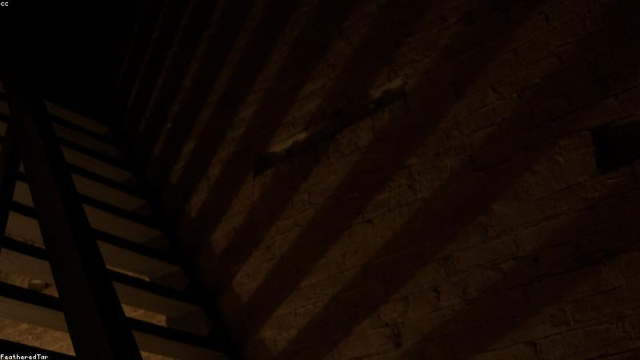

NO. 36
樓梯間
往下，是另一層樓。
他住 12 樓，電梯壞，走樓梯。數到 13 階，出現 B2 指示牌——他這棟沒 B2。
推門，是自家大廳，但家具覆塵，牆日曆停在去年今日。那天，他搬進此屋。
他摸日曆，紙脆碎。門後腳步近：『你回來了。』是他自己的聲。

他住 12 樓，電梯壞，走樓梯。數到 13 階，出現 B2 指示牌——他這棟沒 B2。
推門，是自家大廳，但家具覆塵，牆日曆停在去年今日。那天，他搬進此屋。
他摸日曆，紙脆碎。門後腳步近：『你回來了。』是他自己的聲。